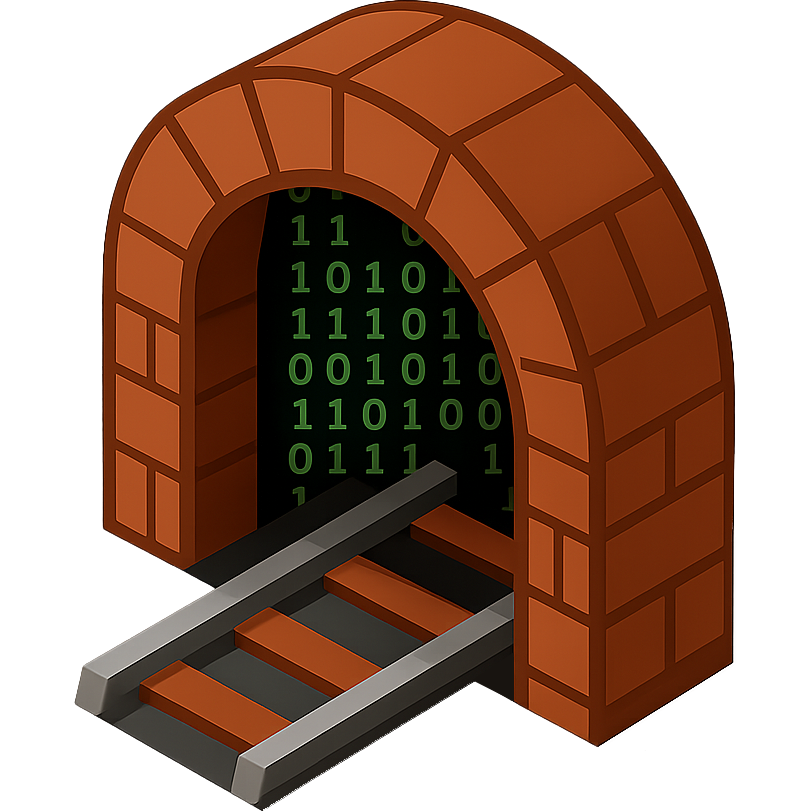

Click the link below to test the custom protocol handler. If CCD Tunnel Helper is installed, it should open your terminal and start the tunnel:
Connect to Dev Server (Port 10000 virtualmin) Connect to Dev Server (Port 2025 phpmyadmin)
If it doesn't work, check that CCD Tunnel Helper is installed and that the ccd-tunnel:// protocol
is registered.